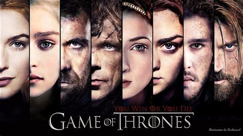

A Game of Thrones————权力的游戏 |
主页 人物 剧照 短评影响 |
|  | POV手法： 首先，POV手法使得观众能够深入了解多个主要角色的内心世界。每集通常以不同角色的视角展开，观众通过角色的独白或思考，更好地理解他们的动机、恐惧和渴望。这种深度描绘为观众提供了更为立体和真实的角色形象，使得观众能够与之产生情感共鸣。 其次，POV手法增强了剧集的复杂性和戏剧性。由于每个角色都有自己的视角和理解，观众被引导去思考和理解不同角色之间的矛盾、权谋和冲突。这种多视角叙事为故事的发展注入了戏剧性，使得观众充满期待，时刻保持对情节的关注。 |